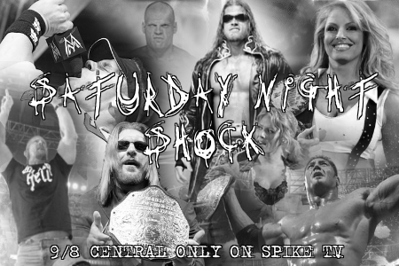

Results for November 28, 2009
ICW Arena, Philadelphia, PA
The scene opens up backstage, Ransom Rochelle can be seen preparing for his match, when a masked individual comes from behind him and nails him with a steel chair, Rochelle falls too his knees before collapsing to the ground. The masked individual walks over Ransom, standing above him, the masked individual looks down at the badly bruised and injured Ransom Rochelle.
Masked Individual: You want to make fun of those with a misfortune, you want too talk bad about those with a misfortune you are in for a world of hurt, along with those who want too follow in your footsteps of mocking, and making fun of those with a misfortune!
As the individual begins to walk away, the individual whispers the word “BEDLAMITE!!!” The individual then walks on out of Rochelle’s dressing room before the Intercontinental Championship Wrestling security can arrive.
*****
Backstage at the ICW Arena, Producer Pete Hansen and ICW Road Agent Jonathan Black stand talking as Trinity Black walks up to the two men.
Pete: Trinity, where is your husband? It is five minutes before we go on the air.
Trin: Catering brought in grape soda and chocolate donuts.
Motioning her head backwards, she indicates to the two men to look behind them where a rather large, well built man stands over the catering table.
John: Not even wild horses could tear my brother way from that table now.
Voice: Talking about me?
At that moment, LJ Black walks up with a can of grape soda in one hand and a chocolate donut in the other.
LJ: Quite the show we have tonight. Wouldn't you agree, Pete?
Pete: Yes, sir. I would say the booking committee did a fantastic job coming up with this card.
LJ: Yes, I agree, the booking committee did a fine job with tonight’s card.
John: I look forward to seeing who is ready to show they have the eye of the tiger.
Pete nods his head at Jonathan as LJ pats the older man on the back.
LJ: Well, gentlemen, it is almost show time. So if you will excuse us, we will be retiring to our office to enjoy the show. My dear?
The ICW owner tosses his soda can in a near by recycling bin before offering his arm to his wife. Trin accepts before she motions with her eyes to two young Asian men standing against the far wall to follow them.
*****
The red and white pyro explodes as the opening music plays and we scan across the arena packed with cheering fans with signs such as "I love you, John Patrick" and "Marry me, Shirlea Frost.
Summer: Welcome everybody to the inaugural edition of Saturday Night Shock. I'm Summer Breeze alongside my broadcast partner, Johnny Sorrow, and what a show we have for you tonight.
Johnny: Indeed we do, Summer. We not only have a triple threat match, but we will see the ICW debut Annabelle Jones, daughter of the legendary Angelica “Firestar” Jones, as she takes on one of the Case sisters, Kelsey Case.
Summer: Speaking of legendary, our main event will feature the Legend by Design himself, John Patrick, as he takes on the Man From the Land of the Rising Sun, Shinya Okubo.
Johnny: Plus, before the night is over, we will have details on ICW's first pay-per-view Eve of Destruction. Right now, let's send it down to Jimmy Landell, Jr. for our opening match.
*****
Jimmy Landell, Jr.: The following contest is set for one fall. Introducing first from The Church standing six feet, six inches and weighing 280 lbs., Syn!!!
The lights in the arena go out. “Fear is Big Business” by Ministry starts to play. Fog starts to roll up from the entrance ramp as a single light shines from behind curtains, silhouetting a massive figure.
A second, smaller figure walks out past the first as a spotlight hits the ramp. Syn’s manager, Angel, stands on the ramp looking out to the fans. She then summons Syn to her side as she walks down the ramp.
Once at the ring, Angel circles around to the steps as Syn slides in under the ropes. With both in the center of the ring, Angel removes his mask to show the painted, grimacing face of Syn.
Angel instructs Syn before she exits the ring.
Jimmy Landell, Jr.: And his opponent from Phoenix, Arizona standing five feet, eleven inches weighing 234 lbs., "The Viper" Ransom Rochelle!!!
The lights go out and "The Undertaker” by Puscifer begins to play on the PA sound system as “The Viper” Ransom Rochelle begins to walk out from behind the curtains. He stands in front of the entrance way as he examines the crowd with disgust and contempt.
Ransom charges in and Syn raises his leg, hitting a big boot to the face of Ransom. Syn pulls the other man to his feet, nailing a short arm clothesline. Syn then picks Ransom up and thrusts his back down hard across his knee with a back breaker. Syn turns towards the ropes to get his orders from Angel as Ransom slowly gets to his feet. Rushing over, Ransom rolls Syn up and grabs a handful of tights as senior official Bobby McGee makes the count.
1.
2.
3.
Jimmy Landell, Jr.: Ladies and gentlemen here is your winner, "The Viper" Ransom Rochelle!!!
Summer: Syn looked to be dominating Ransom Rochelle, but Ransom was able to take advantage of the distraction by Angel to secure the win.
Johnny: I'm not sure Angel is much help to Syn, as she seemed to have cost him the match.
As Ransom makes his way up the ramp holding his lower back Angel, slides in the ring and berates Syn as he lowers his head.
*****
Kelsey Case sits on the couch in her dressing room. A man walks over and slides into the couch next to her. She moves slightly and then is in his lap, facing him, her legs straddling his. She smiles at him and then kisses him.
Kelsey: You know you shouldn't be here.
As she says this, her cell phone rings and she reaches over to pick it up. The man runs his fingers softly up and down her upper arm.
Man: Oh, yeah? And why shouldn't I be here to cheer you on tonight?
She holds up the phone, showing the caller ID.
Kelsey: Because that is my sister, your wife, calling to check up on me.
The camera changes angles to see the man's face, showing us that it is, in fact, Robbie Inman, Kelsey's brother-in-law. He looks up to her, a slight grin on his face.
Robbie: Well, you better answer it, then.
Kelsey giggles and kisses him again quickly before taking the phone to her ear.
Kelsey: Hey sis, what's up?
A wide smile appears on Robbie's face as he leans in, kissing her neck hard. We can hear Leslie's voice on the other end of the phone.
Leslie: Just wanted to wish you luck tonight.
Kelsey's body reacts to the kisses, and she has to bite her lower lip in order to keep herself from reacting vocally. The arm that is not holding the phone, gently tries to push Robbie away.
Kelsey: Well, thank you sis. I wish you could be here.
Robbie grabs the hand that's attempting to push him away and lifts up her shirt, kissing the skin that's practically bursting from her bra.
Leslie: Me, too. You'll just have to make a big enough statement for the both of us tonight. No one seems too pissed that I couldn't be there tonight, do they?
Kelsey once again has to bite her lower lip to keep herself from being vocally reactive to his attention as she gently, yet forcefully attempts to push him away again.
Kelsey: No. Actually they seem rather sad that they don't get to see us a packaged deal.
Robbie chuckles quietly as he brings his mouth up to her ear and whispers very softly.
Robbie: Don't forget to ask her how Ophelia's doing.
Kelsey quivers slightly and gets goose bumps because of how close they are now and especially with him whispering in her ear.
Kelsey: How is Ophi doing?
Leslie: A little bit better. Her fever finally broke about an hour ago. She's laying on the couch watching A Charlie Brown Christmas right now.
A thoroughly sly grin on his face, Robbie runs his tongue gently over Kelsey's ear lobe. There's no doubt he's enjoying teasing her and seeing how well she can compose herself in this particular situation.
Leslie: Robbie called a little bit ago when he got to Indiana and talked with her for a minute. That perked her up a little bit, too.
Kelsey smiled as her sister told her that the fever was breaking, but then Robbie began to tease her ear lobe and her eyes closed slightly as another quiver ran down her spine, causing more goosebumps to pop up all over her body.
Kelsey: Well, that was nice of Robbie. And I am glad to hear that her fever finally broke.
Leslie: Yeah. No one can make her smile quite like her daddy.
Having heard that, Robbie's kisses slow down as he sighs, a pang of guilt starting to form in his stomach.
Leslie: Well, listen, sis, you do what you do best tonight and kick some ass. I'm gonna snuggle with my girl before she falls asleep.
Kelsey smiles brightly, but then frowns when Robbie looks like he is starting to feel guilty. She almost feels bad for him being here now as well.
Kelsey: All right sis, give our girl a kiss on the cheek for me and tell her her aunt Kelsey loves her.
Leslie: I will. I'll try to catch your match if she falls asleep in time, but call me anyway afterward.
Kelsey: I will. Talk to you later.
Robbie lays his head back, resting it on the back of the sofa.
Leslie: Alright. Bye.
Kelsey: Bye sis.
She hangs up and then looks over at Robbie, a slightly worried expression on her face.
Kelsey: You all right?
He sighs as he lifts his head, rubbing his large hands up and down the outside of her thighs.
Robbie: You ever feel guilty about what we're doing here?
Kelsey pauses a moment, looking at him in his eyes and then bites her lower lip again. This time, it is not because she is trying not to react but a nervous reaction.
Kelsey: Sometimes.
Robbie looks her in the eyes.
Robbie: I've tried to convince myself that we need to stop. If for no other reason than what it would do to Ophi if Les found out and left me.
Kelsey looks guilty as he explains his own reasoning for feeling guilty and nods.
Kelsey: I know. I feel the same way.
Robbie: But...
He shakes his head, bringing his hands up to her face.
Robbie: You just make me feel so damned good. I don't think I can stop.
She pauses and smiles as his hand rubs against her face.
Kelsey: You make me feel really good too Robbie.
He smiles at her as he pulls her into a soft kiss, eliciting a quiet moan from her. He leans his forehead against hers, still cupping her face in his hands, gently stroking her cheeks with his thumbs.
Robbie: You know, we're both assholes for this, and that's going to be thrown in our faces from time to time. We've just gotta deal with that until we figure all of this out, okay?
She nods quietly at his words.
Kelsey: I know. I am just glad that we will be able to handle it together.
Robbie nods.
Robbie: Speaking of handling things together...
He lifts his head, that heart melting grin on his face.
Robbie: You need a little help handling these clothes while you change for your match?
She giggles and nods.
Kelsey: I always need help with my clothing from you, silly.
He smiles as he lifts her shirt over her head, kissing her passionately as he tosses her shirt aside.
*****
(“Just Close Your Eyes” by Waterproof Blonde begins to play over the loudspeakers of the arena. The tron flashes to life and we see scenes of Marie Annabelle Jones in action against various opponents. The words “The Next Generation” appear on the tron. Then a spotlight shines on the stage and Annabelle herself steps out onto the ramp with an ear to ear grin on her face and dressed in her wrestling gear that consists of black pants, a black top, and black boots. Her long red hair hangs down to shoulder length. Based on the confident stride with which the young lady makes her way to the ring, it is obvious that she is ready for action. Annabelle steps up onto the ring steps and up onto the apron. She steps inside the ring and gets a microphone from a ring attendant.)
Annabelle: Its great to be here in Philly!
(The crowd cheers at the cheap pop. A grin spreads across Annabelle’s face as she waits for the noise to die down before continuing.)
Annabelle: You may know me only from my last name, a last name that is infamous in wrestling circles. My aunt Kayla is a former world champion and multi-time tag champion. And of course you can’t utter the name Jones without thinking of my mother, Angelica, who is a nine time former world champion. Some might think about that and realize that yeah, this second generation superstar has quite a lot to live up to.
(Annabelle nods her head.)
Annabelle: Yeah, there are probably plenty of critics out there right now sitting back, watching this, and thinking about my past attempts and believing this time will be no different, thinking that I will not be able to fill my mother’s famous shoes.
And therein lies the problem. The so-called experts seem to think that I actually give a damn about my family’s past. Newsflash…I COULD CARE LESS!
(Annabelle laughs.)
Annabelle: I could care less about my family’s past because its not about them, it isn’t about what my aunt or my mother accomplished. This right here, my career in ICW, is about what I can do, what I can accomplish, and I can guarantee you that I will use ICW as my platform to become the next big star in the Jones family. I intend to become an even bigger star than either my aunt or my mother.
(Annabelle uses her finger to point at herself.)
Annabelle: So this goes out to all of my future opponents, especially mine here tonight, when you step into the ring and look across at me, I don’t want you remembering the sweet innocent little girl that you may have watched grow up over the years; because when that bell rings she is gone and in her place is a mental assassin, a sadistic brutalizer willing to put her own body on the line to gain a win.
Kelsey, in a way I feel bad for you. I know where you’re coming from. You’re looking to get a good start in this business and you’d love to start off on the right foot with a victory here in ICW.
(Annabelle shakes her head.)
Annabelle: Too bad, honey, because it just isn’t happening tonight. You were unlucky enough to draw me as an opponent and tonight is my night. Hell, this company is mine as of now because I’m going to own every single human being I come in contact with.
(Annabelle approaches the camera.)
Annabelle: Get a good close look, get a good long look because you are looking at the future of this business. You are looking at the next ICW World Champion. You are looking at the woman who will single handedly light this company on fire on my way to wrestling glory.
The name Jones is famous in this business but you will someday look back on this day and remember it as the day that a new era of Jones wrestling was ushered in, the era of The Vindicator, the era of Annabelle Jones.
It doesn’t matter who you are, from John Patrick all the way down to my wet behind the ears opponent tonight, not one of you will be able to stop my momentum.
You can’t stop destiny, so just sit back, relax, and enjoy the show as I start my rise to the top of ICW.
*****
Jimmy Landell, Jr.: The following contest is a triple threat match set for one fall. Introducing first, from New York, New York standing at five feet, nine inches and weighing 140 lbs, Shirlea Frost!!!
Drums and guitars kick up over the arena sound system as smoke pours out along the ramp. Strobe lights begin to flash and the screen comes to life with the sexy, curvy silhouette of a woman dancing provocatively to the beat. As the singing kicks in, ice blue sparks cascade down from the ceiling and a beautiful blonde appears at the top of the ramp. She bends down, touching her toes and then flips her hair back, straightening up and lifting her hands to the sky as pyros shoot off along the ramp, following her down to the ring.
Jimmy Landell, Jr.: And her opponent. From Dublin, Ireland standing at six feet, one inch and weighing 236 lbs, Roland Krowe!!!
The lights in the arena go dark. White blurred words appear on the huge screen and they progressively fade in. Once they're finally clear, they read: "THE BASTARD." The fans automatically began booing as "Johnny I Hardly Knew Ya" by RedthruNthru begins blaring over the P.A. System.
During the opening verse, as the lines are slow, green lights sweep over the arena. Then, when the music picks up, out steps Roland Krowe. He enters with a smirk plastered across his lips. He pauses at the top of the entrance ramp and holds up his hands to grace the fans with a two middle finger salute. As he does, green flames fly up from the ring-posts and green sparks shower down from the huge screen.
Roland Krowe makes his way down to the ring, making sure to stay clear of all the fans. He slides underneath the bottom rope, and climbs to one knee. He then rises with time.
Jimmy Landell, Jr.: And their opponent from Chicago, Illinois standing at five feet, nine inches and weighing in at 186 lbs, Terry Richards!!!
“Hellraiser” by Ozzy Osbourne plays as the crowd roars. Terry Richards comes down the aisle, with a pleased smirk on his face. As the crowd cheers on their feet, Terry rolls under the top rope and awaits his opponent.
Krowe and Richards charge one another and Krowe takes Richards down with a hip toss. Richards pops back to his feet and sends Krowe into the ropes with an Irish whip. Richards bends down for a back body drop, but Krowe hits a kick to the face of Richards. Krowe takes down Richards with a swinging neck breaker. Krowe then turns his attention to Frost, who gives him the sweet, innocent look of a scared little girl as he approaches her. Frost quickly sidesteps Krowe and her lips curl into a wicked smirk as she takes him down with a drop toehold. Frost goes to lock in a cross face, but the larger Krowe proves to be too strong and easily breaks her grip.
Summer Breeze: The cross face is not the best move to attempt on a larger opponent.
Johnny Sorrow: While this is true, you still have to admire the way Ms. Frost suckered Roland Krowe in.
Frost hits the middle turnbuckle and flies off with a body press. However, Krowe catches her and tosses her with a fall away slam. Richards is to his feet and nails Krowe with an elbow to the back of the head. As the other man is reeling, Richards delivers a forward Russian leg sweep, taking Krowe to the mat where Richards begins to stomp away at him. Frost rises to her feet and comes up behind Richards. She rolls him up in a small package, grabbing a handful of tights as referee Don Davidson begins the count.
1.
2. No! Krowe breaks up the count.
Krowe grabs Frost by the hair and pulls her to her feet. He tosses her into the corner and charges in with a shoulder block. Frost moves out of the way, however, and Krowe's shoulder meets the metal pole. As Krowe turns, Frost is up hitting a twist of fate. Frost walks seductively around the ring playing up to the men in the crowd as Richards rushes up. Placing her on his shoulder, he spins around and drops her with an airplane spin. Richards lands an elbow drop to the chest of Frost and follows this up by going for the pin.
1.
2. No! Krowe quickly breaks up the count and drops two fists to the back of Richards’ head.
Summer: Good ring savvy by Roland Krowe. I do believe Terry Richards would have gotten the three count there.
Johnny: I don't know about that, Summer. From what I have seen of Shirlea Frost, she is as dangerous in that ring as she is beautiful. I personally think it will take a lot more to keep her down.
Krowe grabs Richards and tosses him out of the ring before turning to look back at Frost, who has her back turned to him. Bent over showing her butt to the man behind her, she glances back over her shoulder at him and pats her own butt as a scrawl comes across the face of Krowe. He grabs her by the right wrist and kneels. He pulls her across his lap and proceeds to spank her a few times before tossing her aside. Krowe advances on Frost who scoots back into the corner with a look of pure hatred on her face. Suddenly, Richards whips Krowe around and punches him with a hard right then lands a running bulldog. Richards goes over to the corner and extends his hand to Frost who gives him a smile as she accepts. With quick speed, she pulls Richards forward so his head hits the turnbuckle as he stumbles back. Frost executes a handstand and wraps her long legs around his neck. She flips him over and pins his shoulders to the mat. Don Davidson hits the mat for the count.
1.
2.
3. No! Richards kicks out.
Summer: Shirlea Frost used that sweet and innocent act to her advantage and it almost got her the pin fall.
Johnny: That young lady knows how to get what she wants in the ring.
Summer: And out of the ring I'm sure.
Johnny: Let's not be petty Summer. After all, Shirlea was AW Adrenaline Champion
Summer: A fact I'm sure she shares with everyone.
Richards is to his feet and trades blows with Krowe. A belly to back suplex by Krowe sends Richards to the mat. Krowe picks Richards up by the scruff of his neck and pulls him to his feet. Krowe lifts the other man high over head and tosses him to the floor below. Krowe turns only to be met by Frost who delivers the Frost Bite (super kick to the face). Krowe falls to the mat as Frost makes the cover hooking the leg. Don Davidson makes the count.
1.
2.
3.
Jimmy Landell, Jr.: Ladies and gentlemen, here is your winner, Shirlea Frost!!!
Summer: That super kick is a devastating move.
Johnny: With Shirlea's long legs, she is able to get some power behind that kick. I can see Shirlea Frost going places in ICW.
Summer: I may not like her tactics, but I have to agree with you, Johnny.
As Terry Richards stands outside the ring slamming his hands on the mat, Shirlea Frost gives him a big smile and blows a kiss at him.
*****
*Rumors running around the ICW locker room as of late, say that Scotty Paine has signed with Intercontinental Championship Wrestling. Are they true, or just rumors? While doing a house show in White Hills, New Jersey. We caught up with Scotty, and asked him a few questions. First, we asked about his injuries. This is what he had to say*
Scotty: I’m alright, I guess ...I’ve dealt with a lot of injuries over my career, but this was by far the scariest. I’ve also taken a lot of bumps too, but this time I busted my back. I’ve been rehabbing, and working out with my old trainer Rocco. Even though the docs don’t want me to wrestle anymore ...I’m going to be back soon.
*Seems like Scotty might not be as healthy as he’d like us to believe, but he’s determined to return to sports-entertainment sooner then later. We then asked how he felt about losing the uXw Heavyweight Championship Match to Kyle Sanders*
Scotty: Well, as they always say ...Sh*t happens. I mean, I some how under estimated him and paid for it. Not that the whole mind games thing threw me off. I never figure that Sanders could take so much punishment ...go figure. I make a living by being one of the most hardcore son of a b*tches in this industry today, and got whopped by doing exactly what I don‘t want others to do to me. I always say, never over look me or you‘ll pay for it. Well, I paid for it didn‘t I? Well Sanders, congratulations ...you did what most thought you couldn‘t do, beat me for the Heavyweight Championship. Although, you won‘t hold it for long ...I‘m holding you to a rematch. Yep, that‘s right. I‘m going to start my Hardcore Revolution with you! I‘m going to redeem myself through you. You‘re the first in a long line of people I‘m going to prove I‘m worthy of another Title reign. This time, I‘m going to request a match I‘ll have no excuses of losing.
*We tried to ask what that last comment meant, but he had nothing else to say on the rematch he wanted with Kyle Sanders. So we ask how he felt his long time rival MeTaL*
Scotty: Frankly, I’m quite tired of F*ckin’ hearing MeTaL’s name! My whole damn career, that guy has been right on my ass. Every federation or small time promotion I’ve ever worked for ...MeTaL and Kaleb Steele have shown up and tried to ruin everything I’ve busted my ass off to get. IWA, xWo, exedra, exedra ...and now ICW! Every last god-damned place I’ve ever worked, MeTaL shows up. Get yourself a career and quit riding my coat tails. I’ve beat your ass, and vise versa. You can’t seem to get over the fact, I don’t need you anymore ...and now you want to haunt me like some demon from my past. Damn, I even beat you in a Barbed-Wire Casket Match! What else do I need to prove to you? Nothing as far as I’m concerned, but if you must ...we can go again. And when we do ...I’m going to expose you for who you really are. You’re nothing Damion Steele, nothing!
*Yet again, Scotty is determined to confront those responsible for the lost of the uXw Hardcore Title, and his former training partner is no exception. This long time feud might be rekindled here in ICW. Who knows what could happen between these two, history has it both men have beaten the other in their own specialty match. Lastly we asked Scotty what he though of the current ICW World Championship Title race. His reply was short but direct*
Scotty: Simply put, who ever enters the ring with me ...I dare you, Come Feel the Paine!
*We feel that “The Crow” might be biting off more then he can chew, but there’s no disputing the fact Scotty has already over come great odds just to get back into the ring*
*****
Backstage, Pete Hansen walks up to the bulletin board and tacks up a piece of paper as Jonathan Black walks up behind him.
John: What's up, Pete?
Pete: Johnny wanted me to put up a notification informing all the talent of the days and times of their scheduled drug tests.
John: Yeah, my brother may be guilty of a lot of things, but allowing drug use is not one of them.
Pete: A clean work environment is a safe work environment in this sport with the number of people who spill blood.
John: So true. Come on. We should go see how the show is going.
As the two men walk off, a number of wrestlers gather around the bulletin board to read over the paper that has just been posted. As one man wearing pink tights and a tutu with a tiara carrying a scepter turns and makes his way out of the crowd, Shirlea Frost takes him by the arm with a huge smile on her face as she bats her eyelashes at him.
Shirlea: What is going on sugar?
"Queen" Gaylord: Please, honey child, like you're even my type. If you want to know find out for yourself like everyone else.
Shirlea: Fuck off, pansy.
Making her way to the front of the crowd, Shirlea scans the schedule and a fire burns in her eyes as she mumbles under her breath.
Shirlea: Son of a bitch!
*****
Jimmy Landell, Jr.: The following contest is set for one fall. Introducing first, from Peoria, Illinois standing five feet, seven inches and weighing 145 lbs, Kelsey Case!!!
("You're Going Down" by Sick Puppies play as Kelsey makes her way to the ring.)
Johnny Sorrow: Are we sure this is Kelsey and not Leslie coming to the ring?
Summer Breeze: Do you doubt the integrity of the Case sisters?
Johnny: No, not at all. It's just they look alike so it's hard to tell which is which?
Jimmy Landell, Jr.: And her opponent, from Boston, Massachusetts standing five feet, seven inches and weighing 130 lbs, Marie “Annabelle” Jones!!!
“Just Close Your Eyes” by Waterproof Blonde begins to play over the loudspeakers of the arena. The tron flashes to life and we see scenes of Marie Annabelle Jones in action against various opponents. The words “The Next Generation” appear on the tron. Then a spotlight shines on the stage and Annabelle, dressed in her wrestling gear that consists of black pants, a black top and black boots, emerges with an ear-to-ear grin on her face. Her long, red hair hangs down to shoulder length. Based on the confident stride with which the young lady makes her way to the ring, it is obvious that she is ready for action. Annabelle steps up onto the ring and onto the apron. She steps inside the ring and waits patiently for the match to get started.)
Summer: I have been looking forward to seeing Annabelle in action inside the ICW ring.
Johnny: That makes two of us, Summer. The daughter of multi time World Champion Angelica Jones you just know she has talent.
Summer: If Annabelle has even half the talent her mother has, she will be going places in this sport.
Johnny: Referee Jason Burns is calling for the bell and this one is underway, folks.
Both ladies lock up in the center of the ring Jones motions to the crowd to get them into the match. They lock up again and Case places Jones in a headlock and tightens her grip. Jones, however, shoves her off and hits a spinning heel kick as Case turns back towards her. Jones pulls Case to her feet and whips her to the far corner. She approaches the other woman with a bit of an arrogant swagger in her step. Jones grabs Case’s left arm and goes for a whip, which Case reverses. Jones goes crashing into the far corner then follows up with a handstand. She wraps her legs around the other woman and flips her to the mat. Case keeps her legs locked around Jones’ neck and applies a chokehold. Jones, however, manages to reach the bottom rope with her left leg as referee Jason Burns makes Case break the hold.
Summer: Annabelle Jones had enough ring savvy to know where she was. That’s a good sign from a rookie.
Johnny: No doubt about that, but Kelsey Case will not go easy on this rookie.
Case goes to pull Jones to her feet only to be met with a shoulder to the gut from the other woman. Jones wraps her arms around Case's neck and lands a short arm DDT. Case is to her knees and Jones kicks her in side, causing the other woman to cry out in pain.
Summer: Nice recovery by Annabelle followed by that DDT. Not so sure how I feel about that follow up kick though.
Johnny: Jones is showing an aggressive side. I like it and I'm sure her mother would be proud. Besides, if Kelsey Case can’t take it, she is in the wrong business.
Jones lifts Case up over her head and drops her to the mat with a fall away slam. Jones makes the cover as referee Jason Burns goes down for the count.
1.
2. No! Case kicks out!
Jones goes to pull case to her feet only for Case to roll her up in a small package.
1.
2. No, Jones kicks free!
Both ladies circle one another in the middle of the ring. Case locks onto Jones and lands a suplex that sends the other woman to the mat. Case pulls Jones up as if going for a body slam, but instead drops her across her knee with a shoulder breaker. Jones sits up as Case comes up behind her and nails a neck snap. Case pulls Jones down and hooks the leg.
1.
2. No! Jones rolls a shoulder up.
Summer: Kelsey Case with a couple of near falls.
Johnny: I don't think either of these beautiful young ladies is worn down enough for the other to score the pin fall.
Summer: I'm going to have to agree with you on that, Johnny.
Jones rolls to her feet and charges Case. She leaps onto the other woman and knocks her down before delivering a series of punches to her opponent’s face as Jason Burns makes the five count.
1.
2.
3.
4.
5.
Jones grabs Case by the hair and drags her up to her feet. She lifts her up in a fireman’s carry and drops her hard to the mat. As Case moves to her feet, Jones kicks her in the side of the head. Case is reeling. Once more, Jones pulls Case to her feet and locks in an abdominal stretch. After a few moments, she breaks the hold and drops Case to the mat. Jones moves in only for the other woman to grab her in a sling shot position. Jones gets launched into the turnbuckle. Jones stumbles back falling to the mat as Case quickly goes to the top turnbuckle and flies off with a shooting star press. She quickly hooks the leg.
1.
2.
3. No! Jones just gets the shoulder up.
Summer: What an impressive move by Kelsey! I thought she had the match one with that shooting star press.
Johnny: Never underestimate a woman with Annabelle's pedigree.
Case pulls Jones to her feet and sends her to the corner with an Irish whip. Case leaps to the second rope and begins to pulverize Jones with a series of rights as referee Jason Burns makes the five count.
1.
2.
3.
4.
5.
Just as the referee reaches the five count, Jones grabs onto Case and rushes forward to land a running power bomb. Jones pins her shoulders to mat.
1.
2.
3. No! Case brings her knees against the side on Jones’ that results in her breaking the hold.
Case climbs to the top turnbuckle. Jones quickly follows and tries to hook her for a suplex. Case counters and both women fall to the mat. Both women are laid out on the mat as the referee begins the ten count.
1.
2.
3.
4.
5.
6.
Jones is slowly to her feet.
7.
8.
9.
Case makes it to her feet.
Summer: That top rope suplex took a lot out of both ladies.
Johnny: I can tell you from experience, a suplex off the top rope will take the wind out of your sails.
Jones lands a standing drop kick that sends Case through the ropes to the floor. Case starts to climb back in the ring, but Jones grabs her by the hair and pulls her forcefully over the top rope and back into the ring. Case springs to her feet only to be met by a swinging neck breaker from Jones. As Case is laid out Jones, raises her arms to the cheering crowd for support. Case is to her feet with her back to Jones. Jones nails Case with a shining wizard kick to the back of the head. Jones makes the cover hooking the leg.
1.
2.
3. No! Case kicks out.
Summer: Annabelle calls that The Stubborn Bitch.
Johnny: I can see why she nearly had Kelsey with that move.
Case is to her feet and springboards from the second ropes with a cross body block to Jones. Jones gets knocked to the mat. Case makes the pin and hooks the leg as Jason Burns makes the count.
1.
2. No! Jones powers out.
Both women are to their feet. Then from out of nowhere, Jones hits the Vindicator (MVP's Playmaker). Jones quickly makes the cover and hooks the leg as referee Jason Burns makes the count.
1.
2.
3.
Jimmy Landell, Jr.: Ladies and gentlemen here is your winner, Marie “Annabelle Jones!!!”
Summer: I don't think Kelsey saw that move coming.
Johnny: I know I didn't.
Summer: An impressive debut for the second-generation superstar.
Johnny: Very true Summer, but look for Kelsey Case to bounce back stronger than ever.
In the ring, Annabelle makes her rounds to all four corners. She then climbs the turnbuckle and raises both arms to the cheering crowd with a cocky, confident smile on her face.
*****
THE END IS NEAR!
December 31, 2009
Pictures of Leslie and Kelsey Case flash across the screen followed by a shot of people rioting. John Patrick is shown in action followed by a massive fire. Images of Syn and Ransom Rochelle flash across the screen followed by flashing bolts of lightning. Marie "Annabelle" Jones, Alex Morgan, and Shinya Okubo are shown on screen followed by a massive earthquake. Scotty Paine, Samuel Hessingstock, and Terry Richards flash across the screen followed by a scene of buildings crumbling to the ground.
THE END IS ONLY THE BEGINNING!
The mushroom cloud of a nuclear explosion flashes on screen.
ICW PRESENTS: EVE OF DESTRUCTION!
Summer Breeze: Be sure to join us New Year’s Eve for Eve of Destruction. On this night, a single elimination tournament will be held to crown the first ever ICW Shock Champion.
Johnny Sorrow: It will no doubt be a night of nonstop action, folks. So if you're tired of the same humdrum New Year’s Eve specials, consider us your alternative.
*****
Backstage at the ICW Arena in the office of the Blacks, LJ sits behind his desk as Trinity lounges on the nearby couch. The couple watches the flat screen television mounted on the wall as LJ nods in approval.
Trin: I take it you approve of tonight’s events?
LJ: We will, of course, have to wait for the ratings to come in. But as of now, I would say we are a success, at least from a box of standpoint considering we sold out the arena.
There comes a small knock at the door that brings causes LJ’s face to distort in frustration.
LJ: What are those doing out there? Hero and Xiah have their orders. We are not to be disturbed unless it is absolutely important!
Trin: Then it must be important.
LJ: Fine. Come in.
After a moment of no response, LJ becomes more frustrated.
LJ: Damn it all to hell!
Trin: (hiding a grin) Maybe you should answer it, dear.
Angrily, LJ gets up, walks to the door and forcefully pulls it open.
LJ: WHAT?!
Looking down, LJ sees a small girl with her blonde hair up in pigtails looking up at him with a big smile. His expression softens as he leans over and picks her up in his arms.
LJ: Stacy! Honey, what are you doing here?
Before his young daughter can answer, LJ's brother, Jonathan Black, comes forward pushing a huge birthday cake. Jonathan is followed by Pete Hansen, Tim Thomas, Bar Keep, Amanda Fines, Crea, Rick Carson, Alexander Pendragon, Hero and Xiah. They grace LJ Black by singing “Happy Birthday.”
Jonathan: I know your birthday is not until Tuesday, LJ, but this seemed like a tremendous occasion to celebrate being a Shock's premiere.
The two brothers hug and Stacy gives her daddy a kiss on the cheek.
Stacy: Happy Birthday, Daddy.
LJ: Thank you, baby girl.
Trinity walks over and wraps one arm around her husband and gives him a peck on the cheek.
Trin: Happy birthday dear.
*****
Jimmy Landell, Jr.: Ladies and gentlemen... The following contest is your main event of the evening and it is scheduled for one fall. Introducing first...
[“Art and Life” by Twista plays over the sound system of the arena and Shinya Okubo steps into view of the masses. He wears his wrestling gear and a white ICW t-shirt.]
Jimmy Landell, Jr.: From Shizouka, Japan and weighing in at 192 pounds, SHINYA OKUBO!!
[Okubo walks slowly towards the ring, gently touching outstretched hands as he walks. He climbs the ring steps, swipes his boots, and enters through the middle rope. Shinya steps to a turnbuckle and raises his right fist, saluting the crowd. He steps off of the buckles and uses the top rope to stretch as he awaits the start of the match.]
Summer: I have heard nothing but good things about the skills of the man from the land of the Rising Sun.
Johnny: I have seen Shinya in action; the man is tough.
Jimmy Landell, Jr.: And his opponent...
[The guitar opens up with “Burn it to the Ground.” When Chad Kroeger starts to sing, John Patrick walks out onto the stage. He stands there for a minute as five pyro blasts in gold go off on each side of him.]
Jimmy Landell, Jr.: From Wichita, Kansas weighing in at 240 pounds... "THE LEGEND BY DESIGN," JOHN PATRICK!!
[Patrick then walks down the ramp and rolls under the bottom rope into the ring. He hits all for turnbuckles for poses.]
Summer: Here comes a true legend.
Johnny: You got that right, Summer. What hasn't John Patrick done in this business?
[With both men standing in the center of the ring, ICW Senior Referee Bobby McGee gives them instructions. Both men stare into each other's faces with blank expressions as the crowd waits in anticipation. Once finished giving them the pre-match instructions, McGee motions toward the timekeeper for the ringing of the bell to start the match.]
Summer: This should be an exciting match.
Johnny: Exciting may be too light a word.
[Okubo extends his right hand toward Patrick in a show of respect. Patrick looks at Okubo's hand with a smirk on his face before looking out to the crowd. There's a mixed reaction from the crowd as Patrick looks from Okubo's hand to his face then back to his hand. Now, Okubo and Patrick both look out toward the crowd with Okubo's hand still extended while Patrick has both of his hands on his waist.]
Summer: John Patrick seems hesitant to accept Shinya's hand.
Johnny: John is a wily veteran. He is playing mind games with Shinya.
[Finally, Patrick extends his hand for the opening handshake before both men begin circling the ring. Collar and elbow tie-up in the center of the ring, with Patrick's weight advantage coming into play as he forces Okubo back against the ropes. Okubo keeps his fist clenched while the tie-up remains engaged; McGee moves in to call for the clean break. Patrick backs away slowly, his hands flat on Okubo's chest before finally gaining enough separation with a grin.]
Johnny: I told you John was playing mind games with Shinya.
Summer: If that's the case, he is doing a good job from the looks on both men’s faces.
[Both men circle the ring once more before meeting in the center for another collar and elbow. Patrick comes out of the collar and elbow with a side headlock. Okubo manages to wriggle his hands in between, converting the side headlock into an overhand wristlock with Patrick having the clear advantage. Okubo places his head against the back of his hands to gain slightly more leverage. Patrick quickly grapevines Okubo's leg to force him to one knee.]
Summer: Great show of both skill and strength by John Patrick.
Johnny: Shinya is a fighter. He will battle back, count on it.
[Patrick continues with his advantage, forcing Okubo's body backward. Okubo goes back into a bridge before Patrick finally releases the wristlock. Okubo drops flat onto his back then kips up to an appreciative response from the crowd and an impressed smirk from Patrick.]
Summer: Looks as if Shinya has impressed John Patrick.
Johnny: He has impressed me; and that is not an easy thing to do.
[Collar and elbow for the third time with Okubo coming out of it with an arm drag takedown. Patrick scrambles to his feet then spins around, only to get thrown with another arm drag. Patrick scrambles to his feet once more, only to get a chest full of Okubo's feet, thanks to a well-timed dropkick. The dropkick staggers Patrick, sending him back against the ropes. Okubo attempts an Irish whip, but Patrick counters it then dashes after Okubo. Okubo ducks beneath a clothesline attempt from Patrick then stops dead in his tracks, spinning around then catching Patrick with a dropkick that sends him flying over the top rope.]
Summer: What a drop kick from Shinya.
Johnny: If I were Shinya, I would wait and let Bobby McGee count John Patrick out.
[Patrick is slow to get to his feet, Okubo watching him like a hawk. Once Patrick stands, Okubo launches himself over the top rope with a pescado, leaving both men writhing on the floor.]
Summer: OH MY GOD! That was an incredible daredevil move by Shinya!
Johnny: The question is can either man beat the ten count to make it back in the ring?
[Okubo, haven taken the least damage from the pescado, is the first to get to his feet. He grabs Patrick by the hair, forcing Patrick onto his knees. Okubo attempts to get Patrick to his feet so that he can shove him back into the ring, but Patrick stops that with an elbow to the midsection. Patrick rams Okubo's forehead against the ring apron before shoving him into the ring. Okubo rolls toward the center while Patrick slides into the ring beneath the bottom rope. Patrick attempts a running elbow drop, only to miss, thanks to Okubo rolling out of the way. Patrick quickly gets to his feet, favoring his right elbow slightly, only to attempt another elbow drop, which Okubo narrowly escapes. Patrick isn't as quick to get up this time, sitting up and shaking his arm. Okubo quickly gets up, hits the ropes behind Patrick then sprints across the ring to the other side. He hits the ropes then catches Patrick squarely in the chest with a low dropkick.]
Summer: No doubt Shinya is good with his feet.
Johnny: His kicks appear to be devastating.
[Okubo continues the attack by standing to Patrick's side then connecting with a standing moonsault. He hooks Patrick's right leg.]
1...!
2...!
[Patrick presses Okubo off his chest. Okubo, undaunted, grabs Patrick by the hair then pulls him up to his knees. Okubo catches Patrick in the chest with a spin kick that sends The Legend By Design flat onto his back. Okubo hits the ropes to Patrick's right then sprints ahead, catching Patrick with a snap corkscrew elbow. Okubo quickly stands then leaps in the air, catching Patrick with a standing senton before rolling over and hooking the leg.]
1...!
2...!
[Patrick kicks out again. Okubo pulls Patrick to his knees once more then sprints backward to the ropes ahead of Patrick. Okubo comes in for another dropkick, only to be swatted away by Patrick. Patrick slowly gets to his feet before grabbing Okubo by the hair then pulling him to his feet. Patrick connects with a series of forearm shivers to the jaw before sending Okubo to the mat with a short clothesline. Patrick presses the attack, pulling Okubo off the mat then whipping him across the ring before running in behind him. Patrick catches Okubo with a clothesline then drops atop him for a lateral press.]
1...!
[Okubo kicks out, but Patrick covers him again, hooking the leg this time.]
1...!
[Okubo kicks out again. Patrick pulls him to his feet then backs him into the nearest corner. Patrick catches Okubo with a few back elbows to the back of the jaw before whipping him across the ring. Patrick charges, only to get a face full of Okubo's boot. The boot staggers Patrick, giving Okubo an opening to quickly hop up to the second rope then attempt a cross body block. The larger Patrick catches Okubo in midair then takes a couple steps toward the corner before tossing Okubo with a fallaway slam.]
Summer: Both men trying for the pin fall yet unable to succeed.
Johnny: Neither man appear worn down enough at this point.
[Patrick pulls Okubo to his feet, scoops him off the mat then slams him back down hard. Patrick pulls Okubo up once more then whips him across the ring. Patrick drives Okubo into the mat with a power body slam then hooks the leg.]
1...!
2...!
[Okubo gets the shoulder up at the last minute. Patrick pulls him up off the mat once again then whips him hard into the corner, following it up with a hard clothesline. Patrick catches Okubo with a series of shoulder barges in the corner before whipping him across to the opposite corner. Patrick charges; Okubo moves out of the way at the last second; Patrick's shoulder collides with the unforgiving steel of the corner post.]
Summer: John Patrick appears to be in pain favoring his shoulder.
Johnny: I know from experience how unforgiving those metal turnbuckles can be.
[Okubo takes a few moments to gather his senses while Patrick extricates himself from the corner, clutching at his shoulder. Okubo grabs Patrick's left arm then applies an arm wringer before yanking down on it a few times, forcing Patrick down to one knee. Okubo applies an arm bar, cranking on it and forcing Patrick to wince. Patrick gets to his feet, grabbing a handful of Okubo's hair to force him against the ropes. Patrick whips Okubo across the ring, attempts a clothesline, but Okubo makes an adjustment, catching Patrick with a crucifix. Unfortunately, Patrick is too heavy and Okubo is unable of forcing him down into a pinning predicament. Patrick falls backward, his weight crashing down atop Okubo. Patrick rolls his body slightly, forcing Okubo into a pinning predicament.]
1...!
2...!
Okubo gets his shoulder up to break the count. Patrick slowly gets to his feet, still favoring his freshly injured shoulder. Patrick attempts to pull Okubo up but Okubo catches him by surprise with a Small Package.]
1...!
2...!
[Patrick barely escapes in time.]
Summer: Near fall.
Johnny: Close only counts in horseshoes and hand grenades.
[Patrick is the first to his feet and it's clear that he's not pleased. Patrick catches Okubo with a series of forearms to the jaw before scooping him up onto his shoulder. Patrick sprints toward the nearest corner; Okubo wriggles free, sending Patrick chest-first into the corner. Patrick staggers backward, only to be hit with a perfectly placed dropkick between the shoulders that sends him face-first against the top turnbuckle. Okubo comes in from behind for a roll-up.]
1...!
2...!
[Patrick barely escapes. Okubo presses his advantage, pulling Patrick up to his knees then catching him with a knife-edge chop that echoes throughout ICW Arena.]
Summer: John’s chest is red all over from that chop.
Johnny: It's safe to say he will be feeling that knife-edge chop in the morning.
[Patrick winces in pain, his chest already bright red at the point of contact. Okubo catches him with another chop, even harder this time. Patrick quickly stands, clutching his arms against his chest. Okubo catches Patrick with a combination of palm strikes, backing him toward the ropes before connecting with a floating Enziguiri kick.]
Summer: Once more Shinya is proving how dangerous his kicks are.
[Okubo rolls Patrick over then covers him.]
1...!
2...!
[Patrick drapes his foot over the bottom rope at the last possible moment.]
Thr...! NO!!
[Okubo didn't notice that Patrick got his foot up on the rope, so he's a bit confused as to why McGee stopped counting. McGee points to Patrick's foot, which is still draped on the bottom rope. A bit frustrated, Okubo sighs before pulling Patrick up once again. Okubo backs Patrick against the ropes then attempts to whip him across the ring. Patrick counters then charges. As soon as Okubo hits the ropes, Patrick comes flying in for a cross body block. Both men go tumbling awkwardly over the top rope and spill out to the floor.]
Summer: Both men appear to be out of it on the floor.
Johnny: I'm not sure either has much left in the tank at this point.
[Patrick and Okubo are barely moving heap of humanity on the arena floor. McGee looks down at the two men from inside the ring then begins a mandatory ten count.]
1...!
2...!
Johnny: Get up! It can't end like this!
[The crowd joins in on the count while both men are still nearly motionless on the floor.]
3...!
4...!
5...!
Summer: Both men are starting to stir.
[Okubo rolls over so that he's face down, raising up onto his elbows and trying to shake off the cobwebs. Patrick presses the heels of his hands against the sides of his head.]
6...!
[Okubo gets up on all fours, his eyes glassy. Patrick sits up and blinks.]
7...!
8...!
Johnny: Come on! You're both tougher then this! Get in that ring and fight like men!
[Okubo stands, but collapses back to the floor right away, clutching his left knee. Patrick rolls over then grabs the ring apron, using it in an attempt to pull himself to his feet.]
9...!
[Patrick is able to pull himself up enough to grab hold of the bottom rope. The crowd urges him on.]
10...!
[McGee motions with his hands and arms like a baseball umpire motioning to inform everyone that a runner is safe on base. As he does so, he shakes his head profusely before turning toward the timekeeper then motioning for the ringing of the bell.]
Summer: I can't believe it’ a double count out!
Johnny: This is not how I wanted to see our first show end.
Summer: We all feel the same way, Johnny.
Jimmy Landell, Jr.: Ladies and gentlemen, neither man was able to re-enter the ring to answer the referee's ten-count. Therefore, this match ends in a double count-out!
[The crowd responds with a disappointed series of boos and cat calls as grits his teeth while running his right hand through his hair. McGee is now at ringside, tending to Okubo in an attempt to determine how much damage may have been done to the knee.]
Summer: I just don't have the words.
Johnny: I know how you feel, Summer. The disappointment in the outcome can be felt throughout the arena.
Summer: Well, folks, that’s all the time we have for tonight. For my broadcast partner, Johnny Sorrow, I'm Summer Breeze wishing you all a good night.
|